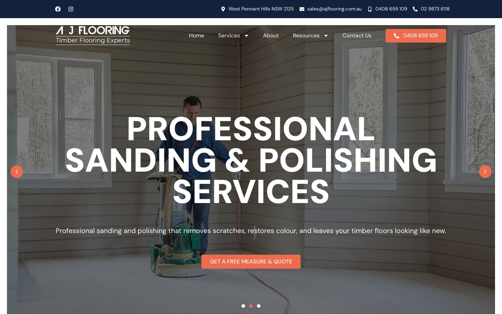
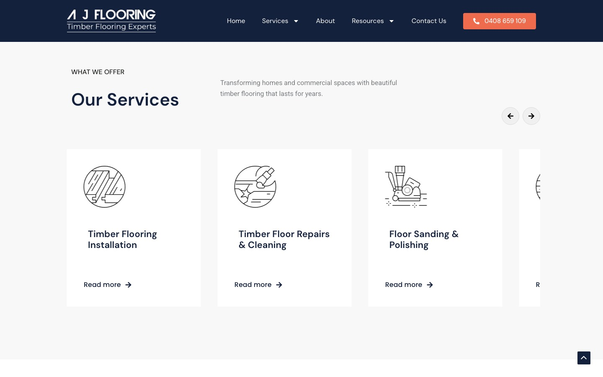
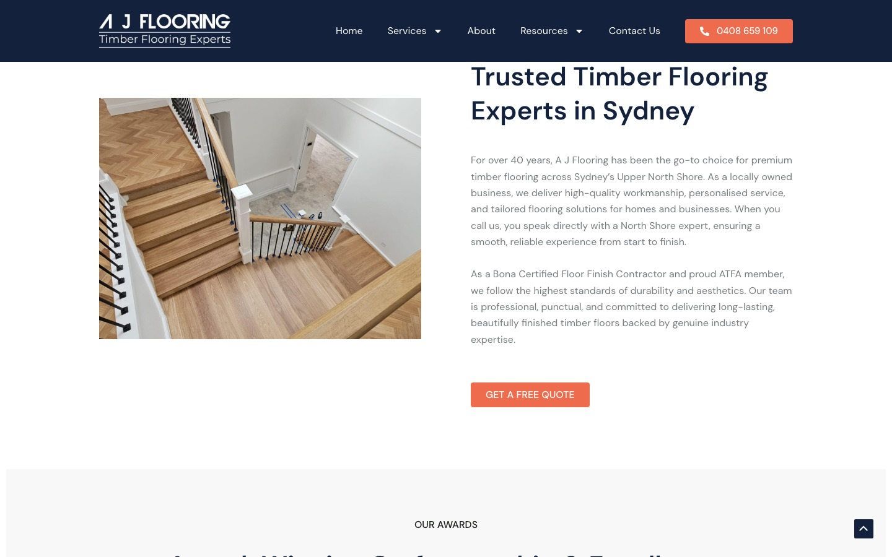
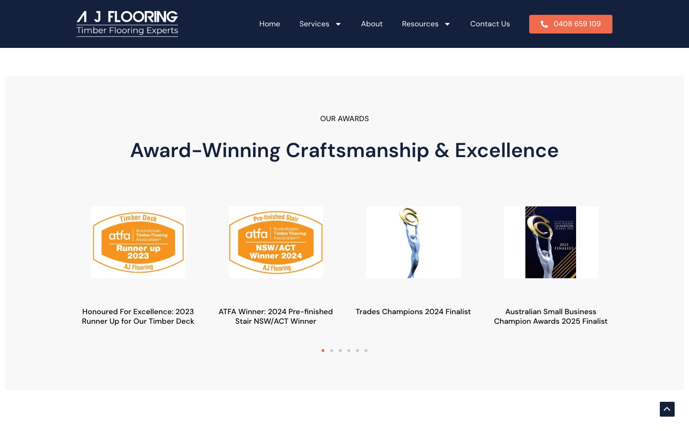

AJ Flooring supplies and installs engineered timber, bamboo, laminate, vinyl plank, and carpet across Australia. I built their site end-to-end on WordPress (Astra + Elementor Pro) — service architecture, lead capture, technical SEO, and performance tuning.
The build was strong enough to back a 2025 Australian Small Business Champion Award Finalist nomination — a result driven as much by the technical SEO and performance work as by the design.
A regional flooring company has to out-rank national chains with far bigger budgets — which makes this a technical SEO and performance problem, not just a design one. The site needed a scalable service-page structure, lead forms that route reliably, and Core Web Vitals strong enough to win on Google against larger competitors.
Every service also needed its own conversion path, so the architecture had to stay consistent across a growing set of pages.
The award finalist nomination is the headline — but underneath it is the engineering: structured-data SEO and a tuned performance budget that let a regional builder out-rank national competitors.

Engineered a custom Elementor service module with a swipeable carousel and consistent CTA pattern — reusable across pages so the client can add new services without touching code or breaking layout.

Architected the homepage information hierarchy to surface credibility signals (Bona certification, ATFA, 40+ years) above the fold, then implemented Rank Math schema + local-business markup to rank for Upper North Shore flooring terms.

Tuned the site with NitroPack caching and image optimisation for strong Core Web Vitals — engineering quality that helped the build earn a 2025 Business Champion Award Finalist nomination.